# Python ≥3.5 is required
import sys
assert sys.version_info >= (3, 5)
# Scikit-Learn ≥0.20 is required
import sklearn
assert sklearn.__version__ >= "0.20"
# Common imports
import numpy as np
import os
# to make this notebook's output stable across runs
np.random.seed(42)
# To plot pretty figures
%matplotlib inline
import matplotlib as mpl
import matplotlib.pyplot as plt
mpl.rc('axes', labelsize=14)
mpl.rc('xtick', labelsize=12)
mpl.rc('ytick', labelsize=12)
# Where to save the figures
PROJECT_ROOT_DIR = "."
CHAPTER_ID = "unsupervised_learning"
IMAGES_PATH = os.path.join(PROJECT_ROOT_DIR, "images", CHAPTER_ID)
os.makedirs(IMAGES_PATH, exist_ok=True)
def save_fig(fig_id, tight_layout=True, fig_extension="png", resolution=300):
path = os.path.join(IMAGES_PATH, fig_id + "." + fig_extension)
print("Saving figure", fig_id)
if tight_layout:
plt.tight_layout()
plt.savefig(path, format=fig_extension, dpi=resolution)Chapter 9 – Unsupervised Learning
This notebook contains all the sample code in chapter 9.
Setup
First, let’s import a few common modules, ensure MatplotLib plots figures inline and prepare a function to save the figures. We also check that Python 3.5 or later is installed (although Python 2.x may work, it is deprecated so we strongly recommend you use Python 3 instead), as well as Scikit-Learn ≥0.20.
Clustering
Introduction – Classification vs Clustering
from sklearn.datasets import load_irisdata = load_iris()
X = data.data
y = data.target
data.target_namesarray(['setosa', 'versicolor', 'virginica'], dtype='<U10')plt.figure(figsize=(9, 3.5))
plt.subplot(121)
plt.plot(X[y==0, 2], X[y==0, 3], "yo", label="Iris setosa")
plt.plot(X[y==1, 2], X[y==1, 3], "bs", label="Iris versicolor")
plt.plot(X[y==2, 2], X[y==2, 3], "g^", label="Iris virginica")
plt.xlabel("Petal length", fontsize=14)
plt.ylabel("Petal width", fontsize=14)
plt.legend(fontsize=12)
plt.subplot(122)
plt.scatter(X[:, 2], X[:, 3], c="k", marker=".")
plt.xlabel("Petal length", fontsize=14)
plt.tick_params(labelleft=False)
save_fig("classification_vs_clustering_plot")
plt.show()Saving figure classification_vs_clustering_plot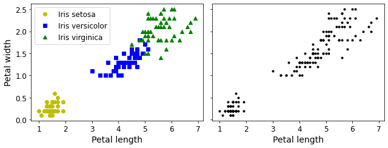
A Gaussian mixture model (explained below) can actually separate these clusters pretty well (using all 4 features: petal length & width, and sepal length & width).
from sklearn.mixture import GaussianMixturey_pred = GaussianMixture(n_components=3, random_state=42).fit(X).predict(X)Let’s map each cluster to a class. Instead of hard coding the mapping (as is done in the book, for simplicity), we will pick the most common class for each cluster (using the scipy.stats.mode() function):
from scipy import stats
mapping = {}
for class_id in np.unique(y):
mode, _ = stats.mode(y_pred[y==class_id])
mapping[mode[0]] = class_id
mapping{1: 0, 2: 1, 0: 2}y_pred = np.array([mapping[cluster_id] for cluster_id in y_pred])plt.plot(X[y_pred==0, 2], X[y_pred==0, 3], "yo", label="Cluster 1")
plt.plot(X[y_pred==1, 2], X[y_pred==1, 3], "bs", label="Cluster 2")
plt.plot(X[y_pred==2, 2], X[y_pred==2, 3], "g^", label="Cluster 3")
plt.xlabel("Petal length", fontsize=14)
plt.ylabel("Petal width", fontsize=14)
plt.legend(loc="upper left", fontsize=12)
plt.show()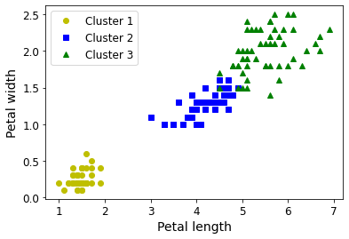
np.sum(y_pred==y)145np.sum(y_pred==y) / len(y_pred)0.9666666666666667Note: the results in this notebook may differ slightly from the book. This is because algorithms can sometimes be tweaked a bit between Scikit-Learn versions.
K-Means
Let’s start by generating some blobs:
from sklearn.datasets import make_blobsblob_centers = np.array(
[[ 0.2, 2.3],
[-1.5 , 2.3],
[-2.8, 1.8],
[-2.8, 2.8],
[-2.8, 1.3]])
blob_std = np.array([0.4, 0.3, 0.1, 0.1, 0.1])X, y = make_blobs(n_samples=2000, centers=blob_centers,
cluster_std=blob_std, random_state=7)Now let’s plot them:
def plot_clusters(X, y=None):
plt.scatter(X[:, 0], X[:, 1], c=y, s=1)
plt.xlabel("$x_1$", fontsize=14)
plt.ylabel("$x_2$", fontsize=14, rotation=0)plt.figure(figsize=(8, 4))
plot_clusters(X)
save_fig("blobs_plot")
plt.show()Saving figure blobs_plot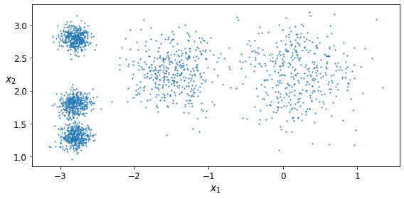
Fit and predict
Let’s train a K-Means clusterer on this dataset. It will try to find each blob’s center and assign each instance to the closest blob:
from sklearn.cluster import KMeansk = 5
kmeans = KMeans(n_clusters=k, random_state=42)
y_pred = kmeans.fit_predict(X)Each instance was assigned to one of the 5 clusters:
y_predarray([4, 1, 0, ..., 3, 0, 1], dtype=int32)y_pred is kmeans.labels_TrueAnd the following 5 centroids (i.e., cluster centers) were estimated:
kmeans.cluster_centers_array([[ 0.20876306, 2.25551336],
[-2.80389616, 1.80117999],
[-1.46679593, 2.28585348],
[-2.79290307, 2.79641063],
[-2.80037642, 1.30082566]])Note that the KMeans instance preserves the labels of the instances it was trained on. Somewhat confusingly, in this context, the label of an instance is the index of the cluster that instance gets assigned to:
kmeans.labels_array([4, 1, 0, ..., 3, 0, 1], dtype=int32)Of course, we can predict the labels of new instances:
X_new = np.array([[0, 2], [3, 2], [-3, 3], [-3, 2.5]])
kmeans.predict(X_new)array([0, 0, 3, 3], dtype=int32)Decision Boundaries
Let’s plot the model’s decision boundaries. This gives us a Voronoi diagram:
def plot_data(X):
plt.plot(X[:, 0], X[:, 1], 'k.', markersize=2)
def plot_centroids(centroids, weights=None, circle_color='w', cross_color='k'):
if weights is not None:
centroids = centroids[weights > weights.max() / 10]
plt.scatter(centroids[:, 0], centroids[:, 1],
marker='o', s=35, linewidths=8,
color=circle_color, zorder=10, alpha=0.9)
plt.scatter(centroids[:, 0], centroids[:, 1],
marker='x', s=2, linewidths=12,
color=cross_color, zorder=11, alpha=1)
def plot_decision_boundaries(clusterer, X, resolution=1000, show_centroids=True,
show_xlabels=True, show_ylabels=True):
mins = X.min(axis=0) - 0.1
maxs = X.max(axis=0) + 0.1
xx, yy = np.meshgrid(np.linspace(mins[0], maxs[0], resolution),
np.linspace(mins[1], maxs[1], resolution))
Z = clusterer.predict(np.c_[xx.ravel(), yy.ravel()])
Z = Z.reshape(xx.shape)
plt.contourf(Z, extent=(mins[0], maxs[0], mins[1], maxs[1]),
cmap="Pastel2")
plt.contour(Z, extent=(mins[0], maxs[0], mins[1], maxs[1]),
linewidths=1, colors='k')
plot_data(X)
if show_centroids:
plot_centroids(clusterer.cluster_centers_)
if show_xlabels:
plt.xlabel("$x_1$", fontsize=14)
else:
plt.tick_params(labelbottom=False)
if show_ylabels:
plt.ylabel("$x_2$", fontsize=14, rotation=0)
else:
plt.tick_params(labelleft=False)plt.figure(figsize=(8, 4))
plot_decision_boundaries(kmeans, X)
save_fig("voronoi_plot")
plt.show()Saving figure voronoi_plot
Not bad! Some of the instances near the edges were probably assigned to the wrong cluster, but overall it looks pretty good.
Hard Clustering vs Soft Clustering
Rather than arbitrarily choosing the closest cluster for each instance, which is called hard clustering, it might be better measure the distance of each instance to all 5 centroids. This is what the transform() method does:
kmeans.transform(X_new)array([[2.88633901, 0.32995317, 2.9042344 , 1.49439034, 2.81093633],
[5.84236351, 2.80290755, 5.84739223, 4.4759332 , 5.80730058],
[1.71086031, 3.29399768, 0.29040966, 1.69136631, 1.21475352],
[1.21567622, 3.21806371, 0.36159148, 1.54808703, 0.72581411]])You can verify that this is indeed the Euclidian distance between each instance and each centroid:
np.linalg.norm(np.tile(X_new, (1, k)).reshape(-1, k, 2) - kmeans.cluster_centers_, axis=2)array([[2.88633901, 0.32995317, 2.9042344 , 1.49439034, 2.81093633],
[5.84236351, 2.80290755, 5.84739223, 4.4759332 , 5.80730058],
[1.71086031, 3.29399768, 0.29040966, 1.69136631, 1.21475352],
[1.21567622, 3.21806371, 0.36159148, 1.54808703, 0.72581411]])The K-Means Algorithm
The K-Means algorithm is one of the fastest clustering algorithms, and also one of the simplest: * First initialize \(k\) centroids randomly: \(k\) distinct instances are chosen randomly from the dataset and the centroids are placed at their locations. * Repeat until convergence (i.e., until the centroids stop moving): * Assign each instance to the closest centroid. * Update the centroids to be the mean of the instances that are assigned to them.
The KMeans class applies an optimized algorithm by default. To get the original K-Means algorithm (for educational purposes only), you must set init="random", n_init=1and algorithm="full". These hyperparameters will be explained below.
Let’s run the K-Means algorithm for 1, 2 and 3 iterations, to see how the centroids move around:
kmeans_iter1 = KMeans(n_clusters=5, init="random", n_init=1,
algorithm="full", max_iter=1, random_state=0)
kmeans_iter2 = KMeans(n_clusters=5, init="random", n_init=1,
algorithm="full", max_iter=2, random_state=0)
kmeans_iter3 = KMeans(n_clusters=5, init="random", n_init=1,
algorithm="full", max_iter=3, random_state=0)
kmeans_iter1.fit(X)
kmeans_iter2.fit(X)
kmeans_iter3.fit(X)KMeans(algorithm='full', init='random', max_iter=3, n_clusters=5, n_init=1,
random_state=0)And let’s plot this:
plt.figure(figsize=(10, 8))
plt.subplot(321)
plot_data(X)
plot_centroids(kmeans_iter1.cluster_centers_, circle_color='r', cross_color='w')
plt.ylabel("$x_2$", fontsize=14, rotation=0)
plt.tick_params(labelbottom=False)
plt.title("Update the centroids (initially randomly)", fontsize=14)
plt.subplot(322)
plot_decision_boundaries(kmeans_iter1, X, show_xlabels=False, show_ylabels=False)
plt.title("Label the instances", fontsize=14)
plt.subplot(323)
plot_decision_boundaries(kmeans_iter1, X, show_centroids=False, show_xlabels=False)
plot_centroids(kmeans_iter2.cluster_centers_)
plt.subplot(324)
plot_decision_boundaries(kmeans_iter2, X, show_xlabels=False, show_ylabels=False)
plt.subplot(325)
plot_decision_boundaries(kmeans_iter2, X, show_centroids=False)
plot_centroids(kmeans_iter3.cluster_centers_)
plt.subplot(326)
plot_decision_boundaries(kmeans_iter3, X, show_ylabels=False)
save_fig("kmeans_algorithm_plot")
plt.show()Saving figure kmeans_algorithm_plot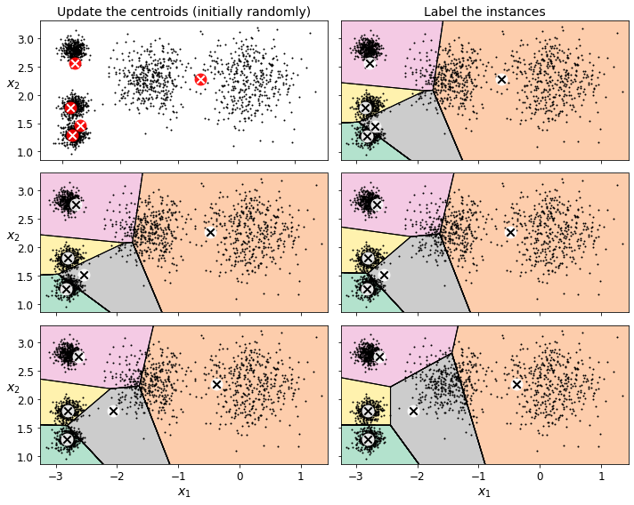
K-Means Variability
In the original K-Means algorithm, the centroids are just initialized randomly, and the algorithm simply runs a single iteration to gradually improve the centroids, as we saw above.
However, one major problem with this approach is that if you run K-Means multiple times (or with different random seeds), it can converge to very different solutions, as you can see below:
def plot_clusterer_comparison(clusterer1, clusterer2, X, title1=None, title2=None):
clusterer1.fit(X)
clusterer2.fit(X)
plt.figure(figsize=(10, 3.2))
plt.subplot(121)
plot_decision_boundaries(clusterer1, X)
if title1:
plt.title(title1, fontsize=14)
plt.subplot(122)
plot_decision_boundaries(clusterer2, X, show_ylabels=False)
if title2:
plt.title(title2, fontsize=14)kmeans_rnd_init1 = KMeans(n_clusters=5, init="random", n_init=1,
algorithm="full", random_state=2)
kmeans_rnd_init2 = KMeans(n_clusters=5, init="random", n_init=1,
algorithm="full", random_state=5)
plot_clusterer_comparison(kmeans_rnd_init1, kmeans_rnd_init2, X,
"Solution 1", "Solution 2 (with a different random init)")
save_fig("kmeans_variability_plot")
plt.show()Saving figure kmeans_variability_plot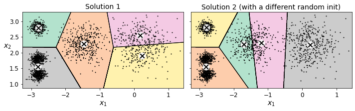
Inertia
To select the best model, we will need a way to evaluate a K-Mean model’s performance. Unfortunately, clustering is an unsupervised task, so we do not have the targets. But at least we can measure the distance between each instance and its centroid. This is the idea behind the inertia metric:
kmeans.inertia_211.5985372581683As you can easily verify, inertia is the sum of the squared distances between each training instance and its closest centroid:
X_dist = kmeans.transform(X)
np.sum(X_dist[np.arange(len(X_dist)), kmeans.labels_]**2)211.5985372581684The score() method returns the negative inertia. Why negative? Well, it is because a predictor’s score() method must always respect the “greater is better” rule.
kmeans.score(X)-211.5985372581683Multiple Initializations
So one approach to solve the variability issue is to simply run the K-Means algorithm multiple times with different random initializations, and select the solution that minimizes the inertia. For example, here are the inertias of the two “bad” models shown in the previous figure:
kmeans_rnd_init1.inertia_219.8438540223319kmeans_rnd_init2.inertia_236.95563196978728As you can see, they have a higher inertia than the first “good” model we trained, which means they are probably worse.
When you set the n_init hyperparameter, Scikit-Learn runs the original algorithm n_init times, and selects the solution that minimizes the inertia. By default, Scikit-Learn sets n_init=10.
kmeans_rnd_10_inits = KMeans(n_clusters=5, init="random", n_init=10,
algorithm="full", random_state=2)
kmeans_rnd_10_inits.fit(X)KMeans(algorithm='full', init='random', n_clusters=5, random_state=2)As you can see, we end up with the initial model, which is certainly the optimal K-Means solution (at least in terms of inertia, and assuming \(k=5\)).
plt.figure(figsize=(8, 4))
plot_decision_boundaries(kmeans_rnd_10_inits, X)
plt.show()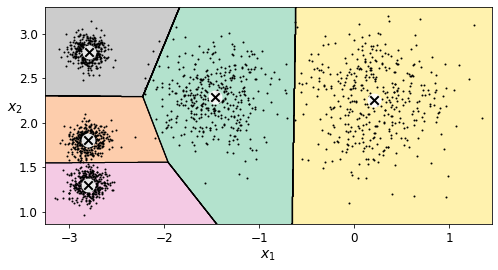
Centroid initialization methods
Instead of initializing the centroids entirely randomly, it is preferable to initialize them using the following algorithm, proposed in a 2006 paper by David Arthur and Sergei Vassilvitskii: * Take one centroid \(c_1\), chosen uniformly at random from the dataset. * Take a new center \(c_i\), choosing an instance \(\mathbf{x}_i\) with probability: \(D(\mathbf{x}_i)^2\) / \(\sum\limits_{j=1}^{m}{D(\mathbf{x}_j)}^2\) where \(D(\mathbf{x}_i)\) is the distance between the instance \(\mathbf{x}_i\) and the closest centroid that was already chosen. This probability distribution ensures that instances that are further away from already chosen centroids are much more likely be selected as centroids. * Repeat the previous step until all \(k\) centroids have been chosen.
The rest of the K-Means++ algorithm is just regular K-Means. With this initialization, the K-Means algorithm is much less likely to converge to a suboptimal solution, so it is possible to reduce n_init considerably. Most of the time, this largely compensates for the additional complexity of the initialization process.
To set the initialization to K-Means++, simply set init="k-means++" (this is actually the default):
KMeans()KMeans()good_init = np.array([[-3, 3], [-3, 2], [-3, 1], [-1, 2], [0, 2]])
kmeans = KMeans(n_clusters=5, init=good_init, n_init=1, random_state=42)
kmeans.fit(X)
kmeans.inertia_211.62337889822362Accelerated K-Means
The K-Means algorithm can be significantly accelerated by avoiding many unnecessary distance calculations: this is achieved by exploiting the triangle inequality (given three points A, B and C, the distance AC is always such that AC ≤ AB + BC) and by keeping track of lower and upper bounds for distances between instances and centroids (see this 2003 paper by Charles Elkan for more details).
To use Elkan’s variant of K-Means, just set algorithm="elkan". Note that it does not support sparse data, so by default, Scikit-Learn uses "elkan" for dense data, and "full" (the regular K-Means algorithm) for sparse data.
%timeit -n 50 KMeans(algorithm="elkan", random_state=42).fit(X)90.4 ms ± 612 µs per loop (mean ± std. dev. of 7 runs, 50 loops each)%timeit -n 50 KMeans(algorithm="full", random_state=42).fit(X)91.6 ms ± 171 µs per loop (mean ± std. dev. of 7 runs, 50 loops each)There’s no big difference in this case, as the dataset is fairly small.
Mini-Batch K-Means
Scikit-Learn also implements a variant of the K-Means algorithm that supports mini-batches (see this paper):
from sklearn.cluster import MiniBatchKMeansminibatch_kmeans = MiniBatchKMeans(n_clusters=5, random_state=42)
minibatch_kmeans.fit(X)MiniBatchKMeans(n_clusters=5, random_state=42)minibatch_kmeans.inertia_211.93186531476786If the dataset does not fit in memory, the simplest option is to use the memmap class, just like we did for incremental PCA in the previous chapter. First let’s load MNIST:
Warning: since Scikit-Learn 0.24, fetch_openml() returns a Pandas DataFrame by default. To avoid this and keep the same code as in the book, we use as_frame=False.
import urllib.request
from sklearn.datasets import fetch_openml
mnist = fetch_openml('mnist_784', version=1, as_frame=False)
mnist.target = mnist.target.astype(np.int64)from sklearn.model_selection import train_test_split
X_train, X_test, y_train, y_test = train_test_split(
mnist["data"], mnist["target"], random_state=42)Next, let’s write it to a memmap:
filename = "my_mnist.data"
X_mm = np.memmap(filename, dtype='float32', mode='write', shape=X_train.shape)
X_mm[:] = X_trainminibatch_kmeans = MiniBatchKMeans(n_clusters=10, batch_size=10, random_state=42)
minibatch_kmeans.fit(X_mm)MiniBatchKMeans(batch_size=10, n_clusters=10, random_state=42)If your data is so large that you cannot use memmap, things get more complicated. Let’s start by writing a function to load the next batch (in real life, you would load the data from disk):
def load_next_batch(batch_size):
return X[np.random.choice(len(X), batch_size, replace=False)]Now we can train the model by feeding it one batch at a time. We also need to implement multiple initializations and keep the model with the lowest inertia:
np.random.seed(42)k = 5
n_init = 10
n_iterations = 100
batch_size = 100
init_size = 500 # more data for K-Means++ initialization
evaluate_on_last_n_iters = 10
best_kmeans = None
for init in range(n_init):
minibatch_kmeans = MiniBatchKMeans(n_clusters=k, init_size=init_size)
X_init = load_next_batch(init_size)
minibatch_kmeans.partial_fit(X_init)
minibatch_kmeans.sum_inertia_ = 0
for iteration in range(n_iterations):
X_batch = load_next_batch(batch_size)
minibatch_kmeans.partial_fit(X_batch)
if iteration >= n_iterations - evaluate_on_last_n_iters:
minibatch_kmeans.sum_inertia_ += minibatch_kmeans.inertia_
if (best_kmeans is None or
minibatch_kmeans.sum_inertia_ < best_kmeans.sum_inertia_):
best_kmeans = minibatch_kmeansbest_kmeans.score(X)-211.70999744411446Mini-batch K-Means is much faster than regular K-Means:
%timeit KMeans(n_clusters=5, random_state=42).fit(X)45.7 ms ± 245 µs per loop (mean ± std. dev. of 7 runs, 10 loops each)%timeit MiniBatchKMeans(n_clusters=5, random_state=42).fit(X)10.2 ms ± 107 µs per loop (mean ± std. dev. of 7 runs, 100 loops each)That’s much faster! However, its performance is often lower (higher inertia), and it keeps degrading as k increases. Let’s plot the inertia ratio and the training time ratio between Mini-batch K-Means and regular K-Means:
from timeit import timeittimes = np.empty((100, 2))
inertias = np.empty((100, 2))
for k in range(1, 101):
kmeans_ = KMeans(n_clusters=k, random_state=42)
minibatch_kmeans = MiniBatchKMeans(n_clusters=k, random_state=42)
print("\r{}/{}".format(k, 100), end="")
times[k-1, 0] = timeit("kmeans_.fit(X)", number=10, globals=globals())
times[k-1, 1] = timeit("minibatch_kmeans.fit(X)", number=10, globals=globals())
inertias[k-1, 0] = kmeans_.inertia_
inertias[k-1, 1] = minibatch_kmeans.inertia_100/100plt.figure(figsize=(10,4))
plt.subplot(121)
plt.plot(range(1, 101), inertias[:, 0], "r--", label="K-Means")
plt.plot(range(1, 101), inertias[:, 1], "b.-", label="Mini-batch K-Means")
plt.xlabel("$k$", fontsize=16)
plt.title("Inertia", fontsize=14)
plt.legend(fontsize=14)
plt.axis([1, 100, 0, 100])
plt.subplot(122)
plt.plot(range(1, 101), times[:, 0], "r--", label="K-Means")
plt.plot(range(1, 101), times[:, 1], "b.-", label="Mini-batch K-Means")
plt.xlabel("$k$", fontsize=16)
plt.title("Training time (seconds)", fontsize=14)
plt.axis([1, 100, 0, 6])
save_fig("minibatch_kmeans_vs_kmeans")
plt.show()Saving figure minibatch_kmeans_vs_kmeans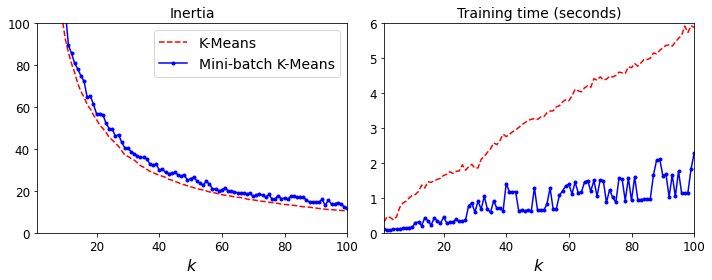
Finding the optimal number of clusters
What if the number of clusters was set to a lower or greater value than 5?
kmeans_k3 = KMeans(n_clusters=3, random_state=42)
kmeans_k8 = KMeans(n_clusters=8, random_state=42)
plot_clusterer_comparison(kmeans_k3, kmeans_k8, X, "$k=3$", "$k=8$")
save_fig("bad_n_clusters_plot")
plt.show()Saving figure bad_n_clusters_plot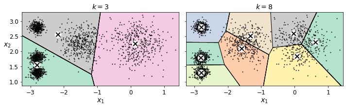
Ouch, these two models don’t look great. What about their inertias?
kmeans_k3.inertia_653.2223267580945kmeans_k8.inertia_118.44108623570081No, we cannot simply take the value of \(k\) that minimizes the inertia, since it keeps getting lower as we increase \(k\). Indeed, the more clusters there are, the closer each instance will be to its closest centroid, and therefore the lower the inertia will be. However, we can plot the inertia as a function of \(k\) and analyze the resulting curve:
kmeans_per_k = [KMeans(n_clusters=k, random_state=42).fit(X)
for k in range(1, 10)]
inertias = [model.inertia_ for model in kmeans_per_k]plt.figure(figsize=(8, 3.5))
plt.plot(range(1, 10), inertias, "bo-")
plt.xlabel("$k$", fontsize=14)
plt.ylabel("Inertia", fontsize=14)
plt.annotate('Elbow',
xy=(4, inertias[3]),
xytext=(0.55, 0.55),
textcoords='figure fraction',
fontsize=16,
arrowprops=dict(facecolor='black', shrink=0.1)
)
plt.axis([1, 8.5, 0, 1300])
save_fig("inertia_vs_k_plot")
plt.show()Saving figure inertia_vs_k_plot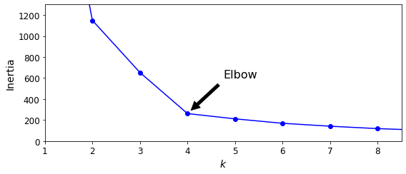
As you can see, there is an elbow at \(k=4\), which means that less clusters than that would be bad, and more clusters would not help much and might cut clusters in half. So \(k=4\) is a pretty good choice. Of course in this example it is not perfect since it means that the two blobs in the lower left will be considered as just a single cluster, but it’s a pretty good clustering nonetheless.
plot_decision_boundaries(kmeans_per_k[4-1], X)
plt.show()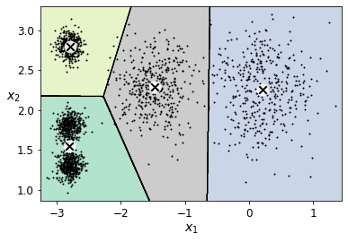
Another approach is to look at the silhouette score, which is the mean silhouette coefficient over all the instances. An instance’s silhouette coefficient is equal to \((b - a)/\max(a, b)\) where \(a\) is the mean distance to the other instances in the same cluster (it is the mean intra-cluster distance), and \(b\) is the mean nearest-cluster distance, that is the mean distance to the instances of the next closest cluster (defined as the one that minimizes \(b\), excluding the instance’s own cluster). The silhouette coefficient can vary between -1 and +1: a coefficient close to +1 means that the instance is well inside its own cluster and far from other clusters, while a coefficient close to 0 means that it is close to a cluster boundary, and finally a coefficient close to -1 means that the instance may have been assigned to the wrong cluster.
Let’s plot the silhouette score as a function of \(k\):
from sklearn.metrics import silhouette_scoresilhouette_score(X, kmeans.labels_)0.655517642572828silhouette_scores = [silhouette_score(X, model.labels_)
for model in kmeans_per_k[1:]]plt.figure(figsize=(8, 3))
plt.plot(range(2, 10), silhouette_scores, "bo-")
plt.xlabel("$k$", fontsize=14)
plt.ylabel("Silhouette score", fontsize=14)
plt.axis([1.8, 8.5, 0.55, 0.7])
save_fig("silhouette_score_vs_k_plot")
plt.show()Saving figure silhouette_score_vs_k_plot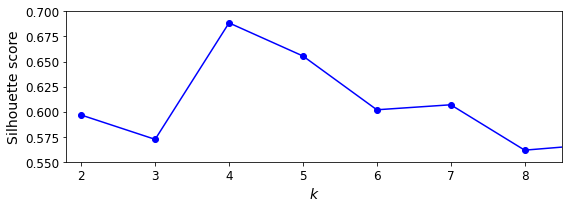
As you can see, this visualization is much richer than the previous one: in particular, although it confirms that \(k=4\) is a very good choice, but it also underlines the fact that \(k=5\) is quite good as well.
An even more informative visualization is given when you plot every instance’s silhouette coefficient, sorted by the cluster they are assigned to and by the value of the coefficient. This is called a silhouette diagram:
from sklearn.metrics import silhouette_samples
from matplotlib.ticker import FixedLocator, FixedFormatter
plt.figure(figsize=(11, 9))
for k in (3, 4, 5, 6):
plt.subplot(2, 2, k - 2)
y_pred = kmeans_per_k[k - 1].labels_
silhouette_coefficients = silhouette_samples(X, y_pred)
padding = len(X) // 30
pos = padding
ticks = []
for i in range(k):
coeffs = silhouette_coefficients[y_pred == i]
coeffs.sort()
color = mpl.cm.Spectral(i / k)
plt.fill_betweenx(np.arange(pos, pos + len(coeffs)), 0, coeffs,
facecolor=color, edgecolor=color, alpha=0.7)
ticks.append(pos + len(coeffs) // 2)
pos += len(coeffs) + padding
plt.gca().yaxis.set_major_locator(FixedLocator(ticks))
plt.gca().yaxis.set_major_formatter(FixedFormatter(range(k)))
if k in (3, 5):
plt.ylabel("Cluster")
if k in (5, 6):
plt.gca().set_xticks([-0.1, 0, 0.2, 0.4, 0.6, 0.8, 1])
plt.xlabel("Silhouette Coefficient")
else:
plt.tick_params(labelbottom=False)
plt.axvline(x=silhouette_scores[k - 2], color="red", linestyle="--")
plt.title("$k={}$".format(k), fontsize=16)
save_fig("silhouette_analysis_plot")
plt.show()Saving figure silhouette_analysis_plot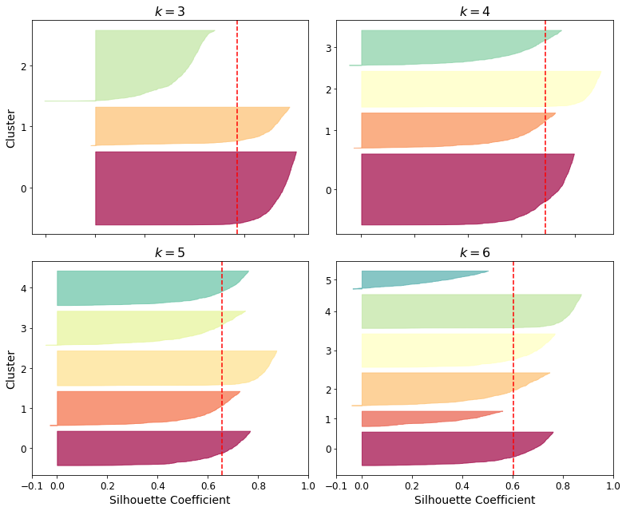
As you can see, \(k=5\) looks like the best option here, as all clusters are roughly the same size, and they all cross the dashed line, which represents the mean silhouette score.
Limits of K-Means
X1, y1 = make_blobs(n_samples=1000, centers=((4, -4), (0, 0)), random_state=42)
X1 = X1.dot(np.array([[0.374, 0.95], [0.732, 0.598]]))
X2, y2 = make_blobs(n_samples=250, centers=1, random_state=42)
X2 = X2 + [6, -8]
X = np.r_[X1, X2]
y = np.r_[y1, y2]plot_clusters(X)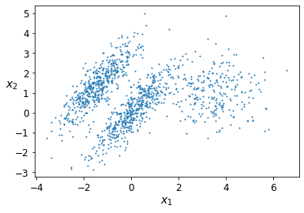
kmeans_good = KMeans(n_clusters=3, init=np.array([[-1.5, 2.5], [0.5, 0], [4, 0]]), n_init=1, random_state=42)
kmeans_bad = KMeans(n_clusters=3, random_state=42)
kmeans_good.fit(X)
kmeans_bad.fit(X)KMeans(n_clusters=3, random_state=42)plt.figure(figsize=(10, 3.2))
plt.subplot(121)
plot_decision_boundaries(kmeans_good, X)
plt.title("Inertia = {:.1f}".format(kmeans_good.inertia_), fontsize=14)
plt.subplot(122)
plot_decision_boundaries(kmeans_bad, X, show_ylabels=False)
plt.title("Inertia = {:.1f}".format(kmeans_bad.inertia_), fontsize=14)
save_fig("bad_kmeans_plot")
plt.show()Saving figure bad_kmeans_plot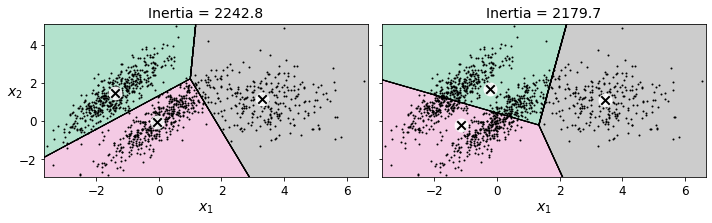
Using Clustering for Image Segmentation
# Download the ladybug image
images_path = os.path.join(PROJECT_ROOT_DIR, "images", "unsupervised_learning")
os.makedirs(images_path, exist_ok=True)
DOWNLOAD_ROOT = "https://raw.githubusercontent.com/ageron/handson-ml2/master/"
filename = "ladybug.png"
print("Downloading", filename)
url = DOWNLOAD_ROOT + "images/unsupervised_learning/" + filename
urllib.request.urlretrieve(url, os.path.join(images_path, filename))Downloading ladybug.png('./images/unsupervised_learning/ladybug.png',
<http.client.HTTPMessage at 0x7fa4386b0090>)from matplotlib.image import imread
image = imread(os.path.join(images_path, filename))
image.shape(533, 800, 3)X = image.reshape(-1, 3)
kmeans = KMeans(n_clusters=8, random_state=42).fit(X)
segmented_img = kmeans.cluster_centers_[kmeans.labels_]
segmented_img = segmented_img.reshape(image.shape)segmented_imgs = []
n_colors = (10, 8, 6, 4, 2)
for n_clusters in n_colors:
kmeans = KMeans(n_clusters=n_clusters, random_state=42).fit(X)
segmented_img = kmeans.cluster_centers_[kmeans.labels_]
segmented_imgs.append(segmented_img.reshape(image.shape))plt.figure(figsize=(10,5))
plt.subplots_adjust(wspace=0.05, hspace=0.1)
plt.subplot(231)
plt.imshow(image)
plt.title("Original image")
plt.axis('off')
for idx, n_clusters in enumerate(n_colors):
plt.subplot(232 + idx)
plt.imshow(segmented_imgs[idx])
plt.title("{} colors".format(n_clusters))
plt.axis('off')
save_fig('image_segmentation_diagram', tight_layout=False)
plt.show()Saving figure image_segmentation_diagram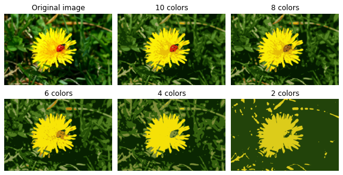
Using Clustering for Preprocessing
Let’s tackle the digits dataset which is a simple MNIST-like dataset containing 1,797 grayscale 8×8 images representing digits 0 to 9.
from sklearn.datasets import load_digitsX_digits, y_digits = load_digits(return_X_y=True)Let’s split it into a training set and a test set:
from sklearn.model_selection import train_test_splitX_train, X_test, y_train, y_test = train_test_split(X_digits, y_digits, random_state=42)Now let’s fit a Logistic Regression model and evaluate it on the test set:
from sklearn.linear_model import LogisticRegressionlog_reg = LogisticRegression(multi_class="ovr", solver="lbfgs", max_iter=5000, random_state=42)
log_reg.fit(X_train, y_train)LogisticRegression(max_iter=5000, multi_class='ovr', random_state=42)log_reg_score = log_reg.score(X_test, y_test)
log_reg_score0.9688888888888889Okay, that’s our baseline: 96.89% accuracy. Let’s see if we can do better by using K-Means as a preprocessing step. We will create a pipeline that will first cluster the training set into 50 clusters and replace the images with their distances to the 50 clusters, then apply a logistic regression model:
from sklearn.pipeline import Pipelinepipeline = Pipeline([
("kmeans", KMeans(n_clusters=50, random_state=42)),
("log_reg", LogisticRegression(multi_class="ovr", solver="lbfgs", max_iter=5000, random_state=42)),
])
pipeline.fit(X_train, y_train)Pipeline(steps=[('kmeans', KMeans(n_clusters=50, random_state=42)),
('log_reg',
LogisticRegression(max_iter=5000, multi_class='ovr',
random_state=42))])pipeline_score = pipeline.score(X_test, y_test)
pipeline_score0.98How much did the error rate drop?
1 - (1 - pipeline_score) / (1 - log_reg_score)0.3571428571428561How about that? We reduced the error rate by over 35%! But we chose the number of clusters \(k\) completely arbitrarily, we can surely do better. Since K-Means is just a preprocessing step in a classification pipeline, finding a good value for \(k\) is much simpler than earlier: there’s no need to perform silhouette analysis or minimize the inertia, the best value of \(k\) is simply the one that results in the best classification performance.
from sklearn.model_selection import GridSearchCVWarning: the following cell may take close to 20 minutes to run, or more depending on your hardware.
param_grid = dict(kmeans__n_clusters=range(2, 100))
grid_clf = GridSearchCV(pipeline, param_grid, cv=3, verbose=2)
grid_clf.fit(X_train, y_train)Fitting 3 folds for each of 98 candidates, totalling 294 fits
[CV] kmeans__n_clusters=2 ............................................
[CV] ............................. kmeans__n_clusters=2, total= 0.2s
[CV] kmeans__n_clusters=2 ............................................
[CV] ............................. kmeans__n_clusters=2, total= 0.1s
[CV] kmeans__n_clusters=2 ............................................
[CV] ............................. kmeans__n_clusters=2, total= 0.1s
[CV] kmeans__n_clusters=3 ............................................
[CV] ............................. kmeans__n_clusters=3, total= 0.2s
[CV] kmeans__n_clusters=3 ............................................
[CV] ............................. kmeans__n_clusters=3, total= 0.2s
[CV] kmeans__n_clusters=3 ............................................
[CV] ............................. kmeans__n_clusters=3, total= 0.2s
[CV] kmeans__n_clusters=4 ............................................
[CV] ............................. kmeans__n_clusters=4, total= 0.2s
[CV] kmeans__n_clusters=4 ............................................
[CV] ............................. kmeans__n_clusters=4, total= 0.2s
[CV] kmeans__n_clusters=4 ............................................
[CV] ............................. kmeans__n_clusters=4, total= 0.2s
[CV] kmeans__n_clusters=5 ............................................
[CV] ............................. kmeans__n_clusters=5, total= 0.2s
[CV] kmeans__n_clusters=5 ............................................
[CV] ............................. kmeans__n_clusters=5, total= 0.2s
[CV] kmeans__n_clusters=5 ............................................
[CV] ............................. kmeans__n_clusters=5, total= 0.2s
[CV] kmeans__n_clusters=6 ............................................
[CV] ............................. kmeans__n_clusters=6, total= 0.3s
[CV] kmeans__n_clusters=6 ............................................
[CV] ............................. kmeans__n_clusters=6, total= 0.3s
[CV] kmeans__n_clusters=6 ............................................
[CV] ............................. kmeans__n_clusters=6, total= 0.3s
[CV] kmeans__n_clusters=7 ............................................
[CV] ............................. kmeans__n_clusters=7, total= 0.3s
<<522 more lines>>
[CV] kmeans__n_clusters=94 ...........................................
[CV] ............................ kmeans__n_clusters=94, total= 4.2s
[CV] kmeans__n_clusters=94 ...........................................
[CV] ............................ kmeans__n_clusters=94, total= 3.6s
[CV] kmeans__n_clusters=95 ...........................................
[CV] ............................ kmeans__n_clusters=95, total= 3.8s
[CV] kmeans__n_clusters=95 ...........................................
[CV] ............................ kmeans__n_clusters=95, total= 4.4s
[CV] kmeans__n_clusters=95 ...........................................
[CV] ............................ kmeans__n_clusters=95, total= 3.7s
[CV] kmeans__n_clusters=96 ...........................................
[CV] ............................ kmeans__n_clusters=96, total= 4.7s
[CV] kmeans__n_clusters=96 ...........................................
[CV] ............................ kmeans__n_clusters=96, total= 4.1s
[CV] kmeans__n_clusters=96 ...........................................
[CV] ............................ kmeans__n_clusters=96, total= 4.0s
[CV] kmeans__n_clusters=97 ...........................................
[CV] ............................ kmeans__n_clusters=97, total= 4.2s
[CV] kmeans__n_clusters=97 ...........................................
[CV] ............................ kmeans__n_clusters=97, total= 4.5s
[CV] kmeans__n_clusters=97 ...........................................
[CV] ............................ kmeans__n_clusters=97, total= 3.9s
[CV] kmeans__n_clusters=98 ...........................................
[CV] ............................ kmeans__n_clusters=98, total= 4.3s
[CV] kmeans__n_clusters=98 ...........................................
[CV] ............................ kmeans__n_clusters=98, total= 4.2s
[CV] kmeans__n_clusters=98 ...........................................
[CV] ............................ kmeans__n_clusters=98, total= 4.0s
[CV] kmeans__n_clusters=99 ...........................................
[CV] ............................ kmeans__n_clusters=99, total= 4.4s
[CV] kmeans__n_clusters=99 ...........................................
[CV] ............................ kmeans__n_clusters=99, total= 4.3s
[CV] kmeans__n_clusters=99 ...........................................
[CV] ............................ kmeans__n_clusters=99, total= 4.5sGridSearchCV(cv=3,
estimator=Pipeline(steps=[('kmeans',
KMeans(n_clusters=50, random_state=42)),
('log_reg',
LogisticRegression(max_iter=5000,
multi_class='ovr',
random_state=42))]),
param_grid={'kmeans__n_clusters': range(2, 100)}, verbose=2)Let’s see what the best number of clusters is:
grid_clf.best_params_{'kmeans__n_clusters': 57}grid_clf.score(X_test, y_test)0.98Using Clustering for Semi-Supervised Learning
Another use case for clustering is in semi-supervised learning, when we have plenty of unlabeled instances and very few labeled instances.
Let’s look at the performance of a logistic regression model when we only have 50 labeled instances:
n_labeled = 50log_reg = LogisticRegression(multi_class="ovr", solver="lbfgs", random_state=42)
log_reg.fit(X_train[:n_labeled], y_train[:n_labeled])
log_reg.score(X_test, y_test)0.8333333333333334It’s much less than earlier of course. Let’s see how we can do better. First, let’s cluster the training set into 50 clusters, then for each cluster let’s find the image closest to the centroid. We will call these images the representative images:
k = 50kmeans = KMeans(n_clusters=k, random_state=42)
X_digits_dist = kmeans.fit_transform(X_train)
representative_digit_idx = np.argmin(X_digits_dist, axis=0)
X_representative_digits = X_train[representative_digit_idx]Now let’s plot these representative images and label them manually:
plt.figure(figsize=(8, 2))
for index, X_representative_digit in enumerate(X_representative_digits):
plt.subplot(k // 10, 10, index + 1)
plt.imshow(X_representative_digit.reshape(8, 8), cmap="binary", interpolation="bilinear")
plt.axis('off')
save_fig("representative_images_diagram", tight_layout=False)
plt.show()Saving figure representative_images_diagram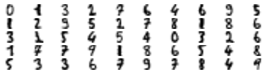
y_train[representative_digit_idx]array([0, 1, 3, 2, 7, 6, 4, 6, 9, 5, 1, 2, 9, 5, 2, 7, 8, 1, 8, 6, 3, 1,
5, 4, 5, 4, 0, 3, 2, 6, 1, 7, 7, 9, 1, 8, 6, 5, 4, 8, 5, 3, 3, 6,
7, 9, 7, 8, 4, 9])y_representative_digits = np.array([
0, 1, 3, 2, 7, 6, 4, 6, 9, 5,
1, 2, 9, 5, 2, 7, 8, 1, 8, 6,
3, 2, 5, 4, 5, 4, 0, 3, 2, 6,
1, 7, 7, 9, 1, 8, 6, 5, 4, 8,
5, 3, 3, 6, 7, 9, 7, 8, 4, 9])Now we have a dataset with just 50 labeled instances, but instead of being completely random instances, each of them is a representative image of its cluster. Let’s see if the performance is any better:
log_reg = LogisticRegression(multi_class="ovr", solver="lbfgs", max_iter=5000, random_state=42)
log_reg.fit(X_representative_digits, y_representative_digits)
log_reg.score(X_test, y_test)0.9133333333333333Wow! We jumped from 83.3% accuracy to 91.3%, although we are still only training the model on 50 instances. Since it’s often costly and painful to label instances, especially when it has to be done manually by experts, it’s a good idea to make them label representative instances rather than just random instances.
But perhaps we can go one step further: what if we propagated the labels to all the other instances in the same cluster?
y_train_propagated = np.empty(len(X_train), dtype=np.int32)
for i in range(k):
y_train_propagated[kmeans.labels_==i] = y_representative_digits[i]log_reg = LogisticRegression(multi_class="ovr", solver="lbfgs", max_iter=5000, random_state=42)
log_reg.fit(X_train, y_train_propagated)LogisticRegression(max_iter=5000, multi_class='ovr', random_state=42)log_reg.score(X_test, y_test)0.9244444444444444We got a tiny little accuracy boost. Better than nothing, but we should probably have propagated the labels only to the instances closest to the centroid, because by propagating to the full cluster, we have certainly included some outliers. Let’s only propagate the labels to the 75th percentile closest to the centroid:
percentile_closest = 75
X_cluster_dist = X_digits_dist[np.arange(len(X_train)), kmeans.labels_]
for i in range(k):
in_cluster = (kmeans.labels_ == i)
cluster_dist = X_cluster_dist[in_cluster]
cutoff_distance = np.percentile(cluster_dist, percentile_closest)
above_cutoff = (X_cluster_dist > cutoff_distance)
X_cluster_dist[in_cluster & above_cutoff] = -1partially_propagated = (X_cluster_dist != -1)
X_train_partially_propagated = X_train[partially_propagated]
y_train_partially_propagated = y_train_propagated[partially_propagated]log_reg = LogisticRegression(multi_class="ovr", solver="lbfgs", max_iter=5000, random_state=42)
log_reg.fit(X_train_partially_propagated, y_train_partially_propagated)LogisticRegression(max_iter=5000, multi_class='ovr', random_state=42)log_reg.score(X_test, y_test)0.9266666666666666A bit better. With just 50 labeled instances (just 5 examples per class on average!), we got 92.7% performance, which is getting closer to the performance of logistic regression on the fully labeled digits dataset (which was 96.9%).
This is because the propagated labels are actually pretty good: their accuracy is close to 96%:
np.mean(y_train_partially_propagated == y_train[partially_propagated])0.9592039800995025You could now do a few iterations of active learning: 1. Manually label the instances that the classifier is least sure about, if possible by picking them in distinct clusters. 2. Train a new model with these additional labels.
DBSCAN
from sklearn.datasets import make_moonsX, y = make_moons(n_samples=1000, noise=0.05, random_state=42)from sklearn.cluster import DBSCANdbscan = DBSCAN(eps=0.05, min_samples=5)
dbscan.fit(X)DBSCAN(eps=0.05)dbscan.labels_[:10]array([ 0, 2, -1, -1, 1, 0, 0, 0, 2, 5])len(dbscan.core_sample_indices_)808dbscan.core_sample_indices_[:10]array([ 0, 4, 5, 6, 7, 8, 10, 11, 12, 13])dbscan.components_[:3]array([[-0.02137124, 0.40618608],
[-0.84192557, 0.53058695],
[ 0.58930337, -0.32137599]])np.unique(dbscan.labels_)array([-1, 0, 1, 2, 3, 4, 5, 6])dbscan2 = DBSCAN(eps=0.2)
dbscan2.fit(X)DBSCAN(eps=0.2)def plot_dbscan(dbscan, X, size, show_xlabels=True, show_ylabels=True):
core_mask = np.zeros_like(dbscan.labels_, dtype=bool)
core_mask[dbscan.core_sample_indices_] = True
anomalies_mask = dbscan.labels_ == -1
non_core_mask = ~(core_mask | anomalies_mask)
cores = dbscan.components_
anomalies = X[anomalies_mask]
non_cores = X[non_core_mask]
plt.scatter(cores[:, 0], cores[:, 1],
c=dbscan.labels_[core_mask], marker='o', s=size, cmap="Paired")
plt.scatter(cores[:, 0], cores[:, 1], marker='*', s=20, c=dbscan.labels_[core_mask])
plt.scatter(anomalies[:, 0], anomalies[:, 1],
c="r", marker="x", s=100)
plt.scatter(non_cores[:, 0], non_cores[:, 1], c=dbscan.labels_[non_core_mask], marker=".")
if show_xlabels:
plt.xlabel("$x_1$", fontsize=14)
else:
plt.tick_params(labelbottom=False)
if show_ylabels:
plt.ylabel("$x_2$", fontsize=14, rotation=0)
else:
plt.tick_params(labelleft=False)
plt.title("eps={:.2f}, min_samples={}".format(dbscan.eps, dbscan.min_samples), fontsize=14)plt.figure(figsize=(9, 3.2))
plt.subplot(121)
plot_dbscan(dbscan, X, size=100)
plt.subplot(122)
plot_dbscan(dbscan2, X, size=600, show_ylabels=False)
save_fig("dbscan_plot")
plt.show()Saving figure dbscan_plot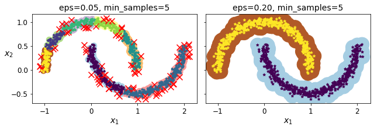
dbscan = dbscan2from sklearn.neighbors import KNeighborsClassifierknn = KNeighborsClassifier(n_neighbors=50)
knn.fit(dbscan.components_, dbscan.labels_[dbscan.core_sample_indices_])KNeighborsClassifier(n_neighbors=50)X_new = np.array([[-0.5, 0], [0, 0.5], [1, -0.1], [2, 1]])
knn.predict(X_new)array([1, 0, 1, 0])knn.predict_proba(X_new)array([[0.18, 0.82],
[1. , 0. ],
[0.12, 0.88],
[1. , 0. ]])plt.figure(figsize=(6, 3))
plot_decision_boundaries(knn, X, show_centroids=False)
plt.scatter(X_new[:, 0], X_new[:, 1], c="b", marker="+", s=200, zorder=10)
save_fig("cluster_classification_plot")
plt.show()Saving figure cluster_classification_plot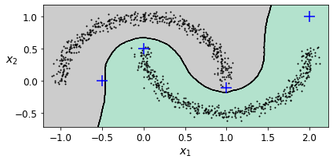
y_dist, y_pred_idx = knn.kneighbors(X_new, n_neighbors=1)
y_pred = dbscan.labels_[dbscan.core_sample_indices_][y_pred_idx]
y_pred[y_dist > 0.2] = -1
y_pred.ravel()array([-1, 0, 1, -1])Other Clustering Algorithms
Spectral Clustering
from sklearn.cluster import SpectralClusteringsc1 = SpectralClustering(n_clusters=2, gamma=100, random_state=42)
sc1.fit(X)SpectralClustering(gamma=100, n_clusters=2, random_state=42)sc2 = SpectralClustering(n_clusters=2, gamma=1, random_state=42)
sc2.fit(X)SpectralClustering(gamma=1, n_clusters=2, random_state=42)np.percentile(sc1.affinity_matrix_, 95)0.04251990648936265def plot_spectral_clustering(sc, X, size, alpha, show_xlabels=True, show_ylabels=True):
plt.scatter(X[:, 0], X[:, 1], marker='o', s=size, c='gray', cmap="Paired", alpha=alpha)
plt.scatter(X[:, 0], X[:, 1], marker='o', s=30, c='w')
plt.scatter(X[:, 0], X[:, 1], marker='.', s=10, c=sc.labels_, cmap="Paired")
if show_xlabels:
plt.xlabel("$x_1$", fontsize=14)
else:
plt.tick_params(labelbottom=False)
if show_ylabels:
plt.ylabel("$x_2$", fontsize=14, rotation=0)
else:
plt.tick_params(labelleft=False)
plt.title("RBF gamma={}".format(sc.gamma), fontsize=14)plt.figure(figsize=(9, 3.2))
plt.subplot(121)
plot_spectral_clustering(sc1, X, size=500, alpha=0.1)
plt.subplot(122)
plot_spectral_clustering(sc2, X, size=4000, alpha=0.01, show_ylabels=False)
plt.show()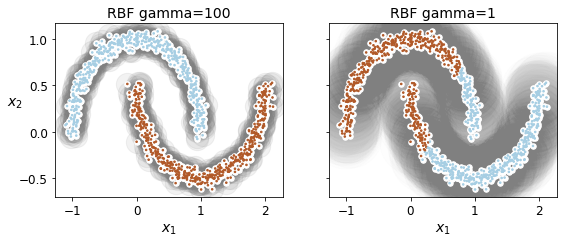
Agglomerative Clustering
from sklearn.cluster import AgglomerativeClusteringX = np.array([0, 2, 5, 8.5]).reshape(-1, 1)
agg = AgglomerativeClustering(linkage="complete").fit(X)def learned_parameters(estimator):
return [attrib for attrib in dir(estimator)
if attrib.endswith("_") and not attrib.startswith("_")]learned_parameters(agg)['children_',
'labels_',
'n_clusters_',
'n_connected_components_',
'n_features_in_',
'n_leaves_']agg.children_array([[0, 1],
[2, 3],
[4, 5]])Gaussian Mixtures
X1, y1 = make_blobs(n_samples=1000, centers=((4, -4), (0, 0)), random_state=42)
X1 = X1.dot(np.array([[0.374, 0.95], [0.732, 0.598]]))
X2, y2 = make_blobs(n_samples=250, centers=1, random_state=42)
X2 = X2 + [6, -8]
X = np.r_[X1, X2]
y = np.r_[y1, y2]Let’s train a Gaussian mixture model on the previous dataset:
from sklearn.mixture import GaussianMixturegm = GaussianMixture(n_components=3, n_init=10, random_state=42)
gm.fit(X)GaussianMixture(n_components=3, n_init=10, random_state=42)Let’s look at the parameters that the EM algorithm estimated:
gm.weights_array([0.39054348, 0.2093669 , 0.40008962])gm.means_array([[ 0.05224874, 0.07631976],
[ 3.40196611, 1.05838748],
[-1.40754214, 1.42716873]])gm.covariances_array([[[ 0.6890309 , 0.79717058],
[ 0.79717058, 1.21367348]],
[[ 1.14296668, -0.03114176],
[-0.03114176, 0.9545003 ]],
[[ 0.63496849, 0.7298512 ],
[ 0.7298512 , 1.16112807]]])Did the algorithm actually converge?
gm.converged_TrueYes, good. How many iterations did it take?
gm.n_iter_4You can now use the model to predict which cluster each instance belongs to (hard clustering) or the probabilities that it came from each cluster. For this, just use predict() method or the predict_proba() method:
gm.predict(X)array([0, 0, 2, ..., 1, 1, 1])gm.predict_proba(X)array([[9.77227791e-01, 2.27715290e-02, 6.79898914e-07],
[9.83288385e-01, 1.60345103e-02, 6.77104389e-04],
[7.51824662e-05, 1.90251273e-06, 9.99922915e-01],
...,
[4.35053542e-07, 9.99999565e-01, 2.17938894e-26],
[5.27837047e-16, 1.00000000e+00, 1.50679490e-41],
[2.32355608e-15, 1.00000000e+00, 8.21915701e-41]])This is a generative model, so you can sample new instances from it (and get their labels):
X_new, y_new = gm.sample(6)
X_newarray([[-0.8690223 , -0.32680051],
[ 0.29945755, 0.2841852 ],
[ 1.85027284, 2.06556913],
[ 3.98260019, 1.50041446],
[ 3.82006355, 0.53143606],
[-1.04015332, 0.7864941 ]])y_newarray([0, 0, 1, 1, 1, 2])Notice that they are sampled sequentially from each cluster.
You can also estimate the log of the probability density function (PDF) at any location using the score_samples() method:
gm.score_samples(X)array([-2.60674489, -3.57074133, -3.33007348, ..., -3.51379355,
-4.39643283, -3.8055665 ])Let’s check that the PDF integrates to 1 over the whole space. We just take a large square around the clusters, and chop it into a grid of tiny squares, then we compute the approximate probability that the instances will be generated in each tiny square (by multiplying the PDF at one corner of the tiny square by the area of the square), and finally summing all these probabilities). The result is very close to 1:
resolution = 100
grid = np.arange(-10, 10, 1 / resolution)
xx, yy = np.meshgrid(grid, grid)
X_full = np.vstack([xx.ravel(), yy.ravel()]).T
pdf = np.exp(gm.score_samples(X_full))
pdf_probas = pdf * (1 / resolution) ** 2
pdf_probas.sum()0.9999999999271592Now let’s plot the resulting decision boundaries (dashed lines) and density contours:
from matplotlib.colors import LogNorm
def plot_gaussian_mixture(clusterer, X, resolution=1000, show_ylabels=True):
mins = X.min(axis=0) - 0.1
maxs = X.max(axis=0) + 0.1
xx, yy = np.meshgrid(np.linspace(mins[0], maxs[0], resolution),
np.linspace(mins[1], maxs[1], resolution))
Z = -clusterer.score_samples(np.c_[xx.ravel(), yy.ravel()])
Z = Z.reshape(xx.shape)
plt.contourf(xx, yy, Z,
norm=LogNorm(vmin=1.0, vmax=30.0),
levels=np.logspace(0, 2, 12))
plt.contour(xx, yy, Z,
norm=LogNorm(vmin=1.0, vmax=30.0),
levels=np.logspace(0, 2, 12),
linewidths=1, colors='k')
Z = clusterer.predict(np.c_[xx.ravel(), yy.ravel()])
Z = Z.reshape(xx.shape)
plt.contour(xx, yy, Z,
linewidths=2, colors='r', linestyles='dashed')
plt.plot(X[:, 0], X[:, 1], 'k.', markersize=2)
plot_centroids(clusterer.means_, clusterer.weights_)
plt.xlabel("$x_1$", fontsize=14)
if show_ylabels:
plt.ylabel("$x_2$", fontsize=14, rotation=0)
else:
plt.tick_params(labelleft=False)plt.figure(figsize=(8, 4))
plot_gaussian_mixture(gm, X)
save_fig("gaussian_mixtures_plot")
plt.show()Saving figure gaussian_mixtures_plotYou can impose constraints on the covariance matrices that the algorithm looks for by setting the covariance_type hyperparameter: * "full" (default): no constraint, all clusters can take on any ellipsoidal shape of any size. * "tied": all clusters must have the same shape, which can be any ellipsoid (i.e., they all share the same covariance matrix). * "spherical": all clusters must be spherical, but they can have different diameters (i.e., different variances). * "diag": clusters can take on any ellipsoidal shape of any size, but the ellipsoid’s axes must be parallel to the axes (i.e., the covariance matrices must be diagonal).
gm_full = GaussianMixture(n_components=3, n_init=10, covariance_type="full", random_state=42)
gm_tied = GaussianMixture(n_components=3, n_init=10, covariance_type="tied", random_state=42)
gm_spherical = GaussianMixture(n_components=3, n_init=10, covariance_type="spherical", random_state=42)
gm_diag = GaussianMixture(n_components=3, n_init=10, covariance_type="diag", random_state=42)
gm_full.fit(X)
gm_tied.fit(X)
gm_spherical.fit(X)
gm_diag.fit(X)GaussianMixture(covariance_type='diag', n_components=3, n_init=10,
random_state=42)def compare_gaussian_mixtures(gm1, gm2, X):
plt.figure(figsize=(9, 4))
plt.subplot(121)
plot_gaussian_mixture(gm1, X)
plt.title('covariance_type="{}"'.format(gm1.covariance_type), fontsize=14)
plt.subplot(122)
plot_gaussian_mixture(gm2, X, show_ylabels=False)
plt.title('covariance_type="{}"'.format(gm2.covariance_type), fontsize=14)compare_gaussian_mixtures(gm_tied, gm_spherical, X)
save_fig("covariance_type_plot")
plt.show()Saving figure covariance_type_plot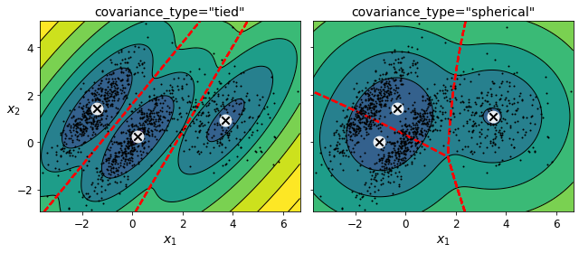
compare_gaussian_mixtures(gm_full, gm_diag, X)
plt.tight_layout()
plt.show()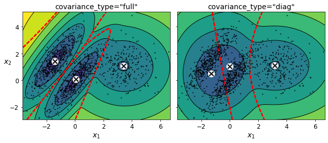
Anomaly Detection Using Gaussian Mixtures
Gaussian Mixtures can be used for anomaly detection: instances located in low-density regions can be considered anomalies. You must define what density threshold you want to use. For example, in a manufacturing company that tries to detect defective products, the ratio of defective products is usually well-known. Say it is equal to 4%, then you can set the density threshold to be the value that results in having 4% of the instances located in areas below that threshold density:
densities = gm.score_samples(X)
density_threshold = np.percentile(densities, 4)
anomalies = X[densities < density_threshold]plt.figure(figsize=(8, 4))
plot_gaussian_mixture(gm, X)
plt.scatter(anomalies[:, 0], anomalies[:, 1], color='r', marker='*')
plt.ylim(top=5.1)
save_fig("mixture_anomaly_detection_plot")
plt.show()Saving figure mixture_anomaly_detection_plot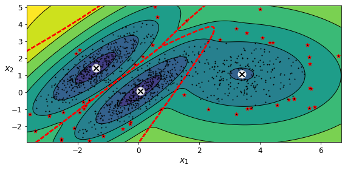
Selecting the Number of Clusters
We cannot use the inertia or the silhouette score because they both assume that the clusters are spherical. Instead, we can try to find the model that minimizes a theoretical information criterion such as the Bayesian Information Criterion (BIC) or the Akaike Information Criterion (AIC):
\({BIC} = {\log(m)p - 2\log({\hat L})}\)
\({AIC} = 2p - 2\log(\hat L)\)
- \(m\) is the number of instances.
- \(p\) is the number of parameters learned by the model.
- \(\hat L\) is the maximized value of the likelihood function of the model. This is the conditional probability of the observed data \(\mathbf{X}\), given the model and its optimized parameters.
Both BIC and AIC penalize models that have more parameters to learn (e.g., more clusters), and reward models that fit the data well (i.e., models that give a high likelihood to the observed data).
gm.bic(X)8189.662685850681gm.aic(X)8102.437405735643We could compute the BIC manually like this:
n_clusters = 3
n_dims = 2
n_params_for_weights = n_clusters - 1
n_params_for_means = n_clusters * n_dims
n_params_for_covariance = n_clusters * n_dims * (n_dims + 1) // 2
n_params = n_params_for_weights + n_params_for_means + n_params_for_covariance
max_log_likelihood = gm.score(X) * len(X) # log(L^)
bic = np.log(len(X)) * n_params - 2 * max_log_likelihood
aic = 2 * n_params - 2 * max_log_likelihoodbic, aic(8189.662685850681, 8102.437405735643)n_params17There’s one weight per cluster, but the sum must be equal to 1, so we have one degree of freedom less, hence the -1. Similarly, the degrees of freedom for an \(n \times n\) covariance matrix is not \(n^2\), but \(1 + 2 + \dots + n = \dfrac{n (n+1)}{2}\).
Let’s train Gaussian Mixture models with various values of \(k\) and measure their BIC:
gms_per_k = [GaussianMixture(n_components=k, n_init=10, random_state=42).fit(X)
for k in range(1, 11)]bics = [model.bic(X) for model in gms_per_k]
aics = [model.aic(X) for model in gms_per_k]plt.figure(figsize=(8, 3))
plt.plot(range(1, 11), bics, "bo-", label="BIC")
plt.plot(range(1, 11), aics, "go--", label="AIC")
plt.xlabel("$k$", fontsize=14)
plt.ylabel("Information Criterion", fontsize=14)
plt.axis([1, 9.5, np.min(aics) - 50, np.max(aics) + 50])
plt.annotate('Minimum',
xy=(3, bics[2]),
xytext=(0.35, 0.6),
textcoords='figure fraction',
fontsize=14,
arrowprops=dict(facecolor='black', shrink=0.1)
)
plt.legend()
save_fig("aic_bic_vs_k_plot")
plt.show()Saving figure aic_bic_vs_k_plot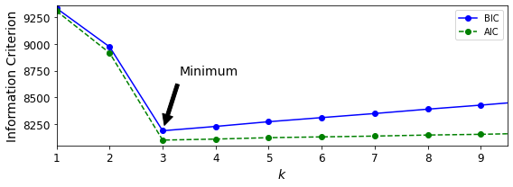
Let’s search for best combination of values for both the number of clusters and the covariance_type hyperparameter:
min_bic = np.infty
for k in range(1, 11):
for covariance_type in ("full", "tied", "spherical", "diag"):
bic = GaussianMixture(n_components=k, n_init=10,
covariance_type=covariance_type,
random_state=42).fit(X).bic(X)
if bic < min_bic:
min_bic = bic
best_k = k
best_covariance_type = covariance_typebest_k3best_covariance_type'full'Bayesian Gaussian Mixture Models
Rather than manually searching for the optimal number of clusters, it is possible to use instead the BayesianGaussianMixture class which is capable of giving weights equal (or close) to zero to unnecessary clusters. Just set the number of components to a value that you believe is greater than the optimal number of clusters, and the algorithm will eliminate the unnecessary clusters automatically.
from sklearn.mixture import BayesianGaussianMixturebgm = BayesianGaussianMixture(n_components=10, n_init=10, random_state=42)
bgm.fit(X)BayesianGaussianMixture(n_components=10, n_init=10, random_state=42)The algorithm automatically detected that only 3 components are needed:
np.round(bgm.weights_, 2)array([0.4 , 0. , 0. , 0. , 0.39, 0.2 , 0. , 0. , 0. , 0. ])plt.figure(figsize=(8, 5))
plot_gaussian_mixture(bgm, X)
plt.show()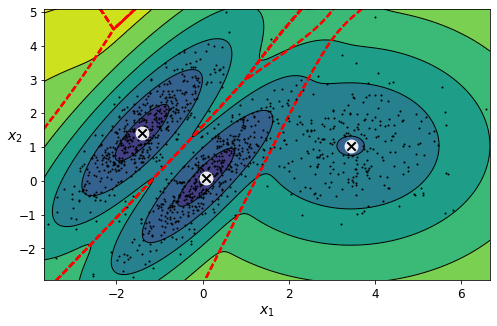
bgm_low = BayesianGaussianMixture(n_components=10, max_iter=1000, n_init=1,
weight_concentration_prior=0.01, random_state=42)
bgm_high = BayesianGaussianMixture(n_components=10, max_iter=1000, n_init=1,
weight_concentration_prior=10000, random_state=42)
nn = 73
bgm_low.fit(X[:nn])
bgm_high.fit(X[:nn])BayesianGaussianMixture(max_iter=1000, n_components=10, random_state=42,
weight_concentration_prior=10000)np.round(bgm_low.weights_, 2)array([0.49, 0.51, 0. , 0. , 0. , 0. , 0. , 0. , 0. , 0. ])np.round(bgm_high.weights_, 2)array([0.43, 0.01, 0.01, 0.11, 0.01, 0.01, 0.01, 0.37, 0.01, 0.01])plt.figure(figsize=(9, 4))
plt.subplot(121)
plot_gaussian_mixture(bgm_low, X[:nn])
plt.title("weight_concentration_prior = 0.01", fontsize=14)
plt.subplot(122)
plot_gaussian_mixture(bgm_high, X[:nn], show_ylabels=False)
plt.title("weight_concentration_prior = 10000", fontsize=14)
save_fig("mixture_concentration_prior_plot")
plt.show()Saving figure mixture_concentration_prior_plot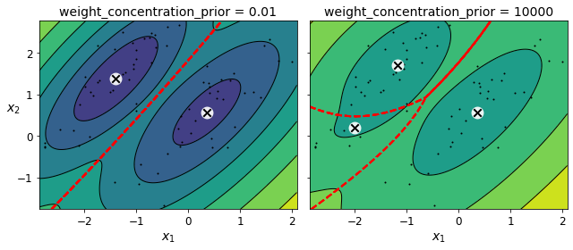
Note: the fact that you see only 3 regions in the right plot although there are 4 centroids is not a bug. The weight of the top-right cluster is much larger than the weight of the lower-right cluster, so the probability that any given point in this region belongs to the top right cluster is greater than the probability that it belongs to the lower-right cluster.
X_moons, y_moons = make_moons(n_samples=1000, noise=0.05, random_state=42)bgm = BayesianGaussianMixture(n_components=10, n_init=10, random_state=42)
bgm.fit(X_moons)BayesianGaussianMixture(n_components=10, n_init=10, random_state=42)plt.figure(figsize=(9, 3.2))
plt.subplot(121)
plot_data(X_moons)
plt.xlabel("$x_1$", fontsize=14)
plt.ylabel("$x_2$", fontsize=14, rotation=0)
plt.subplot(122)
plot_gaussian_mixture(bgm, X_moons, show_ylabels=False)
save_fig("moons_vs_bgm_plot")
plt.show()Saving figure moons_vs_bgm_plot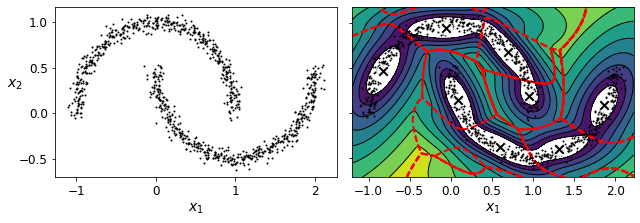
Oops, not great… instead of detecting 2 moon-shaped clusters, the algorithm detected 8 ellipsoidal clusters. However, the density plot does not look too bad, so it might be usable for anomaly detection.
Likelihood Function
from scipy.stats import normxx = np.linspace(-6, 4, 101)
ss = np.linspace(1, 2, 101)
XX, SS = np.meshgrid(xx, ss)
ZZ = 2 * norm.pdf(XX - 1.0, 0, SS) + norm.pdf(XX + 4.0, 0, SS)
ZZ = ZZ / ZZ.sum(axis=1)[:,np.newaxis] / (xx[1] - xx[0])from matplotlib.patches import Polygon
plt.figure(figsize=(8, 4.5))
x_idx = 85
s_idx = 30
plt.subplot(221)
plt.contourf(XX, SS, ZZ, cmap="GnBu")
plt.plot([-6, 4], [ss[s_idx], ss[s_idx]], "k-", linewidth=2)
plt.plot([xx[x_idx], xx[x_idx]], [1, 2], "b-", linewidth=2)
plt.xlabel(r"$x$")
plt.ylabel(r"$\theta$", fontsize=14, rotation=0)
plt.title(r"Model $f(x; \theta)$", fontsize=14)
plt.subplot(222)
plt.plot(ss, ZZ[:, x_idx], "b-")
max_idx = np.argmax(ZZ[:, x_idx])
max_val = np.max(ZZ[:, x_idx])
plt.plot(ss[max_idx], max_val, "r.")
plt.plot([ss[max_idx], ss[max_idx]], [0, max_val], "r:")
plt.plot([0, ss[max_idx]], [max_val, max_val], "r:")
plt.text(1.01, max_val + 0.005, r"$\hat{L}$", fontsize=14)
plt.text(ss[max_idx]+ 0.01, 0.055, r"$\hat{\theta}$", fontsize=14)
plt.text(ss[max_idx]+ 0.01, max_val - 0.012, r"$Max$", fontsize=12)
plt.axis([1, 2, 0.05, 0.15])
plt.xlabel(r"$\theta$", fontsize=14)
plt.grid(True)
plt.text(1.99, 0.135, r"$=f(x=2.5; \theta)$", fontsize=14, ha="right")
plt.title(r"Likelihood function $\mathcal{L}(\theta|x=2.5)$", fontsize=14)
plt.subplot(223)
plt.plot(xx, ZZ[s_idx], "k-")
plt.axis([-6, 4, 0, 0.25])
plt.xlabel(r"$x$", fontsize=14)
plt.grid(True)
plt.title(r"PDF $f(x; \theta=1.3)$", fontsize=14)
verts = [(xx[41], 0)] + list(zip(xx[41:81], ZZ[s_idx, 41:81])) + [(xx[80], 0)]
poly = Polygon(verts, facecolor='0.9', edgecolor='0.5')
plt.gca().add_patch(poly)
plt.subplot(224)
plt.plot(ss, np.log(ZZ[:, x_idx]), "b-")
max_idx = np.argmax(np.log(ZZ[:, x_idx]))
max_val = np.max(np.log(ZZ[:, x_idx]))
plt.plot(ss[max_idx], max_val, "r.")
plt.plot([ss[max_idx], ss[max_idx]], [-5, max_val], "r:")
plt.plot([0, ss[max_idx]], [max_val, max_val], "r:")
plt.axis([1, 2, -2.4, -2])
plt.xlabel(r"$\theta$", fontsize=14)
plt.text(ss[max_idx]+ 0.01, max_val - 0.05, r"$Max$", fontsize=12)
plt.text(ss[max_idx]+ 0.01, -2.39, r"$\hat{\theta}$", fontsize=14)
plt.text(1.01, max_val + 0.02, r"$\log \, \hat{L}$", fontsize=14)
plt.grid(True)
plt.title(r"$\log \, \mathcal{L}(\theta|x=2.5)$", fontsize=14)
save_fig("likelihood_function_plot")
plt.show()Saving figure likelihood_function_plot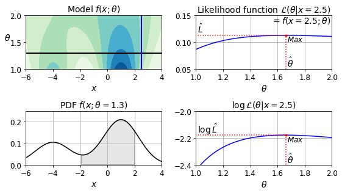
Exercise solutions
1. to 9.
See Appendix A.
10. Cluster the Olivetti Faces Dataset
Exercise: The classic Olivetti faces dataset contains 400 grayscale 64 × 64–pixel images of faces. Each image is flattened to a 1D vector of size 4,096. 40 different people were photographed (10 times each), and the usual task is to train a model that can predict which person is represented in each picture. Load the dataset using the sklearn.datasets.fetch_olivetti_faces() function.
from sklearn.datasets import fetch_olivetti_faces
olivetti = fetch_olivetti_faces()print(olivetti.DESCR).. _olivetti_faces_dataset:
The Olivetti faces dataset
--------------------------
`This dataset contains a set of face images`_ taken between April 1992 and
April 1994 at AT&T Laboratories Cambridge. The
:func:`sklearn.datasets.fetch_olivetti_faces` function is the data
fetching / caching function that downloads the data
archive from AT&T.
.. _This dataset contains a set of face images: http://www.cl.cam.ac.uk/research/dtg/attarchive/facedatabase.html
As described on the original website:
There are ten different images of each of 40 distinct subjects. For some
subjects, the images were taken at different times, varying the lighting,
facial expressions (open / closed eyes, smiling / not smiling) and facial
details (glasses / no glasses). All the images were taken against a dark
homogeneous background with the subjects in an upright, frontal position
(with tolerance for some side movement).
**Data Set Characteristics:**
================= =====================
Classes 40
Samples total 400
Dimensionality 4096
Features real, between 0 and 1
================= =====================
The image is quantized to 256 grey levels and stored as unsigned 8-bit
integers; the loader will convert these to floating point values on the
interval [0, 1], which are easier to work with for many algorithms.
The "target" for this database is an integer from 0 to 39 indicating the
identity of the person pictured; however, with only 10 examples per class, this
relatively small dataset is more interesting from an unsupervised or
semi-supervised perspective.
The original dataset consisted of 92 x 112, while the version available here
consists of 64x64 images.
When using these images, please give credit to AT&T Laboratories Cambridge.
olivetti.targetarray([ 0, 0, 0, 0, 0, 0, 0, 0, 0, 0, 1, 1, 1, 1, 1, 1, 1,
1, 1, 1, 2, 2, 2, 2, 2, 2, 2, 2, 2, 2, 3, 3, 3, 3,
3, 3, 3, 3, 3, 3, 4, 4, 4, 4, 4, 4, 4, 4, 4, 4, 5,
5, 5, 5, 5, 5, 5, 5, 5, 5, 6, 6, 6, 6, 6, 6, 6, 6,
6, 6, 7, 7, 7, 7, 7, 7, 7, 7, 7, 7, 8, 8, 8, 8, 8,
8, 8, 8, 8, 8, 9, 9, 9, 9, 9, 9, 9, 9, 9, 9, 10, 10,
10, 10, 10, 10, 10, 10, 10, 10, 11, 11, 11, 11, 11, 11, 11, 11, 11,
11, 12, 12, 12, 12, 12, 12, 12, 12, 12, 12, 13, 13, 13, 13, 13, 13,
13, 13, 13, 13, 14, 14, 14, 14, 14, 14, 14, 14, 14, 14, 15, 15, 15,
15, 15, 15, 15, 15, 15, 15, 16, 16, 16, 16, 16, 16, 16, 16, 16, 16,
17, 17, 17, 17, 17, 17, 17, 17, 17, 17, 18, 18, 18, 18, 18, 18, 18,
18, 18, 18, 19, 19, 19, 19, 19, 19, 19, 19, 19, 19, 20, 20, 20, 20,
20, 20, 20, 20, 20, 20, 21, 21, 21, 21, 21, 21, 21, 21, 21, 21, 22,
22, 22, 22, 22, 22, 22, 22, 22, 22, 23, 23, 23, 23, 23, 23, 23, 23,
23, 23, 24, 24, 24, 24, 24, 24, 24, 24, 24, 24, 25, 25, 25, 25, 25,
25, 25, 25, 25, 25, 26, 26, 26, 26, 26, 26, 26, 26, 26, 26, 27, 27,
27, 27, 27, 27, 27, 27, 27, 27, 28, 28, 28, 28, 28, 28, 28, 28, 28,
28, 29, 29, 29, 29, 29, 29, 29, 29, 29, 29, 30, 30, 30, 30, 30, 30,
30, 30, 30, 30, 31, 31, 31, 31, 31, 31, 31, 31, 31, 31, 32, 32, 32,
32, 32, 32, 32, 32, 32, 32, 33, 33, 33, 33, 33, 33, 33, 33, 33, 33,
34, 34, 34, 34, 34, 34, 34, 34, 34, 34, 35, 35, 35, 35, 35, 35, 35,
35, 35, 35, 36, 36, 36, 36, 36, 36, 36, 36, 36, 36, 37, 37, 37, 37,
37, 37, 37, 37, 37, 37, 38, 38, 38, 38, 38, 38, 38, 38, 38, 38, 39,
39, 39, 39, 39, 39, 39, 39, 39, 39])Exercise: Then split it into a training set, a validation set, and a test set (note that the dataset is already scaled between 0 and 1). Since the dataset is quite small, you probably want to use stratified sampling to ensure that there are the same number of images per person in each set.
from sklearn.model_selection import StratifiedShuffleSplit
strat_split = StratifiedShuffleSplit(n_splits=1, test_size=40, random_state=42)
train_valid_idx, test_idx = next(strat_split.split(olivetti.data, olivetti.target))
X_train_valid = olivetti.data[train_valid_idx]
y_train_valid = olivetti.target[train_valid_idx]
X_test = olivetti.data[test_idx]
y_test = olivetti.target[test_idx]
strat_split = StratifiedShuffleSplit(n_splits=1, test_size=80, random_state=43)
train_idx, valid_idx = next(strat_split.split(X_train_valid, y_train_valid))
X_train = X_train_valid[train_idx]
y_train = y_train_valid[train_idx]
X_valid = X_train_valid[valid_idx]
y_valid = y_train_valid[valid_idx]print(X_train.shape, y_train.shape)
print(X_valid.shape, y_valid.shape)
print(X_test.shape, y_test.shape)(280, 4096) (280,)
(80, 4096) (80,)
(40, 4096) (40,)To speed things up, we’ll reduce the data’s dimensionality using PCA:
from sklearn.decomposition import PCA
pca = PCA(0.99)
X_train_pca = pca.fit_transform(X_train)
X_valid_pca = pca.transform(X_valid)
X_test_pca = pca.transform(X_test)
pca.n_components_199Exercise: Next, cluster the images using K-Means, and ensure that you have a good number of clusters (using one of the techniques discussed in this chapter).
from sklearn.cluster import KMeans
k_range = range(5, 150, 5)
kmeans_per_k = []
for k in k_range:
print("k={}".format(k))
kmeans = KMeans(n_clusters=k, random_state=42).fit(X_train_pca)
kmeans_per_k.append(kmeans)k=5
k=10
k=15
k=20
k=25
k=30
k=35
k=40
k=45
k=50
k=55
k=60
k=65
k=70
k=75
k=80
k=85
k=90
k=95
k=100
k=105
k=110
k=115
k=120
k=125
k=130
k=135
k=140
k=145from sklearn.metrics import silhouette_score
silhouette_scores = [silhouette_score(X_train_pca, model.labels_)
for model in kmeans_per_k]
best_index = np.argmax(silhouette_scores)
best_k = k_range[best_index]
best_score = silhouette_scores[best_index]
plt.figure(figsize=(8, 3))
plt.plot(k_range, silhouette_scores, "bo-")
plt.xlabel("$k$", fontsize=14)
plt.ylabel("Silhouette score", fontsize=14)
plt.plot(best_k, best_score, "rs")
plt.show()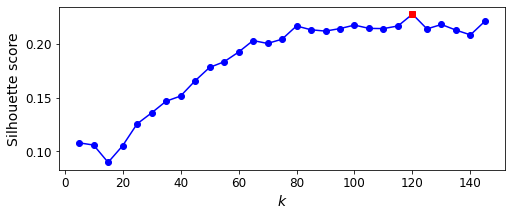
best_k120It looks like the best number of clusters is quite high, at 120. You might have expected it to be 40, since there are 40 different people on the pictures. However, the same person may look quite different on different pictures (e.g., with or without glasses, or simply shifted left or right).
inertias = [model.inertia_ for model in kmeans_per_k]
best_inertia = inertias[best_index]
plt.figure(figsize=(8, 3.5))
plt.plot(k_range, inertias, "bo-")
plt.xlabel("$k$", fontsize=14)
plt.ylabel("Inertia", fontsize=14)
plt.plot(best_k, best_inertia, "rs")
plt.show()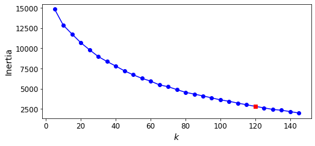
The optimal number of clusters is not clear on this inertia diagram, as there is no obvious elbow, so let’s stick with k=120.
best_model = kmeans_per_k[best_index]Exercise: Visualize the clusters: do you see similar faces in each cluster?
def plot_faces(faces, labels, n_cols=5):
faces = faces.reshape(-1, 64, 64)
n_rows = (len(faces) - 1) // n_cols + 1
plt.figure(figsize=(n_cols, n_rows * 1.1))
for index, (face, label) in enumerate(zip(faces, labels)):
plt.subplot(n_rows, n_cols, index + 1)
plt.imshow(face, cmap="gray")
plt.axis("off")
plt.title(label)
plt.show()
for cluster_id in np.unique(best_model.labels_):
print("Cluster", cluster_id)
in_cluster = best_model.labels_==cluster_id
faces = X_train[in_cluster]
labels = y_train[in_cluster]
plot_faces(faces, labels)Cluster 0
Cluster 1
Cluster 2
Cluster 3
Cluster 4
Cluster 5
Cluster 6
Cluster 7
Cluster 8
Cluster 9
Cluster 10
Cluster 11
Cluster 12
Cluster 13
Cluster 14
Cluster 15
Cluster 16
Cluster 17
Cluster 18
Cluster 19
Cluster 20
Cluster 21
Cluster 22
Cluster 23
Cluster 24
Cluster 25
Cluster 26
Cluster 27
Cluster 28
Cluster 29
Cluster 30
Cluster 31
Cluster 32
Cluster 33
Cluster 34
Cluster 35
Cluster 36
Cluster 37
Cluster 38
Cluster 39
Cluster 40
Cluster 41
Cluster 42
Cluster 43
Cluster 44
Cluster 45
Cluster 46
Cluster 47
Cluster 48
Cluster 49
Cluster 50
Cluster 51
Cluster 52
Cluster 53
Cluster 54
Cluster 55
Cluster 56
Cluster 57
Cluster 58
Cluster 59
Cluster 60
Cluster 61
Cluster 62
Cluster 63
Cluster 64
Cluster 65
Cluster 66
Cluster 67
Cluster 68
Cluster 69
Cluster 70
Cluster 71
Cluster 72
Cluster 73
Cluster 74
Cluster 75
Cluster 76
Cluster 77
Cluster 78
Cluster 79
Cluster 80
Cluster 81
Cluster 82
Cluster 83
Cluster 84
Cluster 85
Cluster 86
Cluster 87
Cluster 88
Cluster 89
Cluster 90
Cluster 91
Cluster 92
Cluster 93
Cluster 94
Cluster 95
Cluster 96
Cluster 97
Cluster 98
Cluster 99
Cluster 100
Cluster 101
Cluster 102
Cluster 103
Cluster 104
Cluster 105
Cluster 106
Cluster 107
Cluster 108
Cluster 109
Cluster 110
Cluster 111
Cluster 112
Cluster 113
Cluster 114
Cluster 115
Cluster 116
Cluster 117
Cluster 118
Cluster 119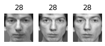

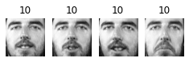
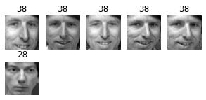
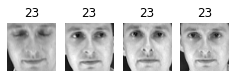


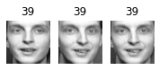
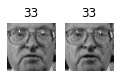


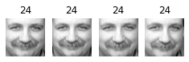
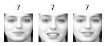


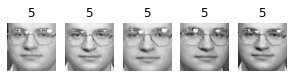
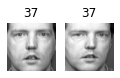
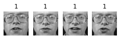
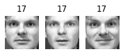
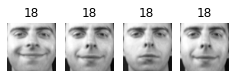
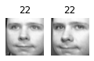
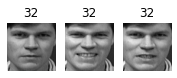
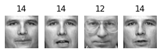

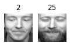

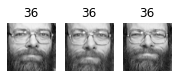

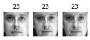
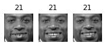
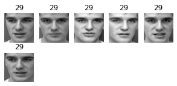


About 2 out of 3 clusters are useful: that is, they contain at least 2 pictures, all of the same person. However, the rest of the clusters have either one or more intruders, or they have just a single picture.
Clustering images this way may be too imprecise to be directly useful when training a model (as we will see below), but it can be tremendously useful when labeling images in a new dataset: it will usually make labelling much faster.
11. Using Clustering as Preprocessing for Classification
Exercise: Continuing with the Olivetti faces dataset, train a classifier to predict which person is represented in each picture, and evaluate it on the validation set.
from sklearn.ensemble import RandomForestClassifier
clf = RandomForestClassifier(n_estimators=150, random_state=42)
clf.fit(X_train_pca, y_train)
clf.score(X_valid_pca, y_valid)0.925Exercise: Next, use K-Means as a dimensionality reduction tool, and train a classifier on the reduced set.
X_train_reduced = best_model.transform(X_train_pca)
X_valid_reduced = best_model.transform(X_valid_pca)
X_test_reduced = best_model.transform(X_test_pca)
clf = RandomForestClassifier(n_estimators=150, random_state=42)
clf.fit(X_train_reduced, y_train)
clf.score(X_valid_reduced, y_valid)0.7Yikes! That’s not better at all! Let’s see if tuning the number of clusters helps.
Exercise: Search for the number of clusters that allows the classifier to get the best performance: what performance can you reach?
We could use a GridSearchCV like we did earlier in this notebook, but since we already have a validation set, we don’t need K-fold cross-validation, and we’re only exploring a single hyperparameter, so it’s simpler to just run a loop manually:
from sklearn.pipeline import Pipeline
for n_clusters in k_range:
pipeline = Pipeline([
("kmeans", KMeans(n_clusters=n_clusters, random_state=42)),
("forest_clf", RandomForestClassifier(n_estimators=150, random_state=42))
])
pipeline.fit(X_train_pca, y_train)
print(n_clusters, pipeline.score(X_valid_pca, y_valid))5 0.3875
10 0.575
15 0.6
20 0.6625
25 0.6625
30 0.6625
35 0.675
40 0.75
45 0.7375
50 0.725
55 0.7125
60 0.7125
65 0.7375
70 0.7375
75 0.7375
80 0.7875
85 0.7625
90 0.75
95 0.7125
100 0.775
105 0.75
110 0.725
115 0.7625
120 0.7
125 0.75
130 0.725
135 0.7375
140 0.7625
145 0.6875Oh well, even by tuning the number of clusters, we never get beyond 80% accuracy. Looks like the distances to the cluster centroids are not as informative as the original images.
Exercise: What if you append the features from the reduced set to the original features (again, searching for the best number of clusters)?
X_train_extended = np.c_[X_train_pca, X_train_reduced]
X_valid_extended = np.c_[X_valid_pca, X_valid_reduced]
X_test_extended = np.c_[X_test_pca, X_test_reduced]clf = RandomForestClassifier(n_estimators=150, random_state=42)
clf.fit(X_train_extended, y_train)
clf.score(X_valid_extended, y_valid)0.8125That’s a bit better, but still worse than without the cluster features. The clusters are not useful to directly train a classifier in this case (but they can still help when labelling new training instances).
12. A Gaussian Mixture Model for the Olivetti Faces Dataset
Exercise: Train a Gaussian mixture model on the Olivetti faces dataset. To speed up the algorithm, you should probably reduce the dataset’s dimensionality (e.g., use PCA, preserving 99% of the variance).
from sklearn.mixture import GaussianMixture
gm = GaussianMixture(n_components=40, random_state=42)
y_pred = gm.fit_predict(X_train_pca)Exercise: Use the model to generate some new faces (using the sample() method), and visualize them (if you used PCA, you will need to use its inverse_transform() method).
n_gen_faces = 20
gen_faces_reduced, y_gen_faces = gm.sample(n_samples=n_gen_faces)
gen_faces = pca.inverse_transform(gen_faces_reduced)plot_faces(gen_faces, y_gen_faces)Exercise: Try to modify some images (e.g., rotate, flip, darken) and see if the model can detect the anomalies (i.e., compare the output of the score_samples() method for normal images and for anomalies).
n_rotated = 4
rotated = np.transpose(X_train[:n_rotated].reshape(-1, 64, 64), axes=[0, 2, 1])
rotated = rotated.reshape(-1, 64*64)
y_rotated = y_train[:n_rotated]
n_flipped = 3
flipped = X_train[:n_flipped].reshape(-1, 64, 64)[:, ::-1]
flipped = flipped.reshape(-1, 64*64)
y_flipped = y_train[:n_flipped]
n_darkened = 3
darkened = X_train[:n_darkened].copy()
darkened[:, 1:-1] *= 0.3
y_darkened = y_train[:n_darkened]
X_bad_faces = np.r_[rotated, flipped, darkened]
y_bad = np.concatenate([y_rotated, y_flipped, y_darkened])
plot_faces(X_bad_faces, y_bad)X_bad_faces_pca = pca.transform(X_bad_faces)gm.score_samples(X_bad_faces_pca)array([-2.43643267e+07, -1.89785012e+07, -3.78112367e+07, -4.98187629e+07,
-3.20479020e+07, -1.37531267e+07, -2.92373870e+07, -1.05489069e+08,
-1.19575421e+08, -6.74256883e+07])The bad faces are all considered highly unlikely by the Gaussian Mixture model. Compare this to the scores of some training instances:
gm.score_samples(X_train_pca[:10])array([1163.02020926, 1134.03637965, 1156.32132746, 1170.67602789,
1141.45404798, 1154.352051 , 1091.32894399, 1111.4114952 ,
1096.43049058, 1132.98982659])13. Using Dimensionality Reduction Techniques for Anomaly Detection
Exercise: Some dimensionality reduction techniques can also be used for anomaly detection. For example, take the Olivetti faces dataset and reduce it with PCA, preserving 99% of the variance. Then compute the reconstruction error for each image. Next, take some of the modified images you built in the previous exercise, and look at their reconstruction error: notice how much larger the reconstruction error is. If you plot a reconstructed image, you will see why: it tries to reconstruct a normal face.
We already reduced the dataset using PCA earlier:
X_train_pcaarray([[ 3.78082728e+00, -1.85479510e+00, -5.14403820e+00, ...,
-1.35639057e-01, -2.14079842e-01, 6.11891970e-02],
[ 1.01488552e+01, -1.52754760e+00, -7.66972005e-01, ...,
1.23932086e-01, -1.35267869e-01, -2.32773516e-02],
[-1.00152864e+01, 2.87729192e+00, -9.19888794e-01, ...,
7.26092011e-02, -2.96637439e-03, 1.24891117e-01],
...,
[ 2.47586942e+00, 2.95597434e+00, 1.29985297e+00, ...,
-2.09175814e-02, 3.48586701e-02, -1.54327601e-01],
[-3.22031736e+00, 5.34898043e+00, 1.39426994e+00, ...,
5.75454161e-02, -2.28316277e-01, 1.55572280e-01],
[-9.22876596e-01, -3.64703155e+00, 2.26088214e+00, ...,
1.36855245e-01, -6.91372752e-02, 6.26810342e-02]], dtype=float32)def reconstruction_errors(pca, X):
X_pca = pca.transform(X)
X_reconstructed = pca.inverse_transform(X_pca)
mse = np.square(X_reconstructed - X).mean(axis=-1)
return msereconstruction_errors(pca, X_train).mean()0.0001920535reconstruction_errors(pca, X_bad_faces).mean()0.004707354plot_faces(X_bad_faces, y_bad)
X_bad_faces_reconstructed = pca.inverse_transform(X_bad_faces_pca)
plot_faces(X_bad_faces_reconstructed, y_bad)